Home › Village and crafting › Stronghold rooms
Stronghold rooms
Furniture and fittings from the archive's stronghold rooms, painted in the same Japanese style. Facilities work like vanilla tool cabinets: place them next to the workstation they help.
In short
Furniture from the archive's stronghold rooms. Facilities speed up the bench they stand next to; there are also training buildings, recreation, decoration, storage and defences.
Facilities
- Scroll library: Lacquered shelves of technique scrolls and reference texts. Researchers nearby work faster.
- Chakra study apparatus: Brass instruments for measuring chakra, from the archive's chakra laboratory. Helps research and the scribe desk.
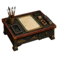
Study writing desk: A low writing desk with brushes and ink stones. A scribe desk nearby works faster.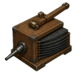
Forge bellows: Big box bellows from a stronghold smithy. A smithy nearby works faster.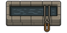
Quenching trough: A stone trough of oiled water for tempering blades. A smithy nearby works faster.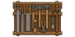
Workshop tool wall: A wall rack of saws, chisels and planes. Workbenches nearby work a little faster (like a tool cabinet).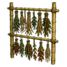
Herb drying rack: Bamboo racks of drying herbs and roots. An alchemy table or drug lab nearby works faster.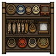
Kitchen spice shelf: Jars of miso, salt and dried fish. A stove nearby cooks faster.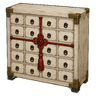
Infirmary cabinet: A cabinet of bandages, needles and medicine. Nearby hospital beds give better care.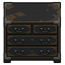
Tansu chest: A lacquered chest of drawers for a bedroom. Nearby beds are a little more comfortable.- Incense burner: A bronze burner with a curl of sandalwood smoke. Nearby beds give deeper rest.
Recreation
- Go board: A thick wooden go board for the war room or the common room. A game of strategy that trains the mind. Needs an adjacent chair or cushion.
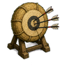
Archery butts: Straw target bales for an archery range. Practice is relaxing and trains shooting.- Star-watching platform: A low platform with a brass sighting tube, for watching the stars and the weather. Outdoors only.
Training
- Straw training dummy: A straw-and-bamboo striking dummy from a combat training area. An hour of practice teaches melee. Once a day per person.
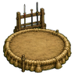
Battle ring: A dusty ring of honour lined with weapon racks. Hard practice here teaches more melee. Once a day per person.
Decoration
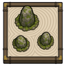
Rock garden: Raked white gravel and mossy stones from a stronghold courtyard. Very beautiful.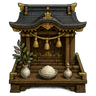
Household shrine: A small shrine with offerings, from the stronghold chapel. Beautiful and calming.- Trophy rack: A rack of captured banners, helmets and blades for a trophy hall.
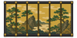
Byōbu screen: A painted folding screen, for bedrooms, studies and throne rooms.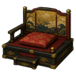
Lord's dais: A raised dais with silk cushions and an armrest, for a lord's throne room.- Stone lantern: A tōrō stone lantern for courtyards and graveyards. It glows softly all night.
Furniture
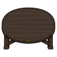
Chabudai table: A low round dining table for a dining hall or tavern. People eat at it from adjacent cushions or chairs.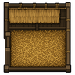
Straw stall: A bedded stall from a stronghold stable, big enough for horses and large animals.
Storage
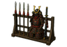
Armoury rack: Weapon and armour racks from a stronghold armoury. Stores weapons and apparel.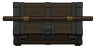
Nagamochi chest: A long lidded storage chest from a storehouse. Stores most things.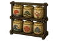
Sake cask rack: A rack of straw-wrapped casks for a tavern. Stores drinks and drugs.
Defence
- Bamboo spike pit: A covered pit of sharpened bamboo, the old way to guard a moat or a gate.
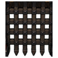
Portcullis gate: A heavy latticed gate from a barbican: very slow to open, very hard to break.